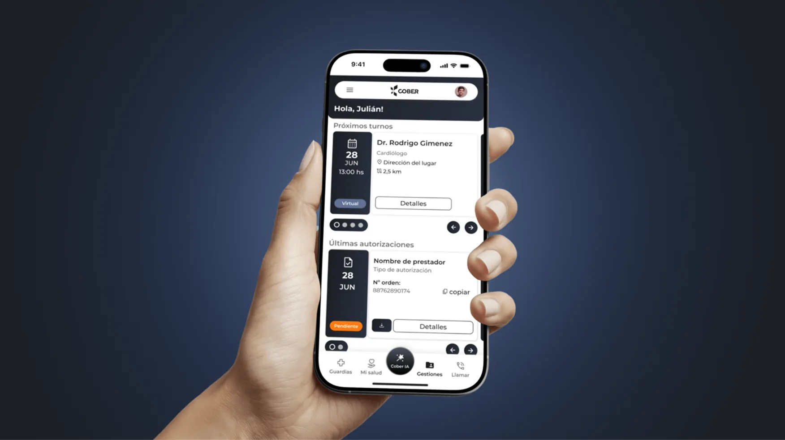
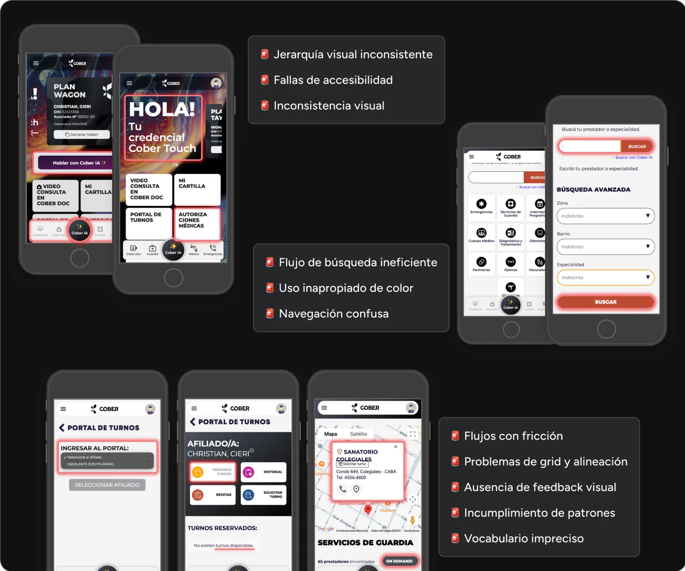
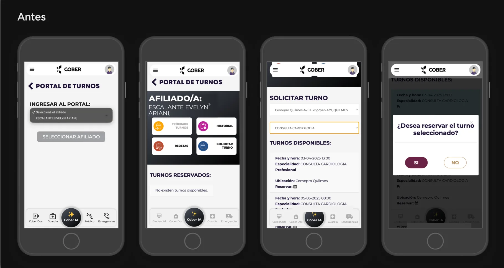
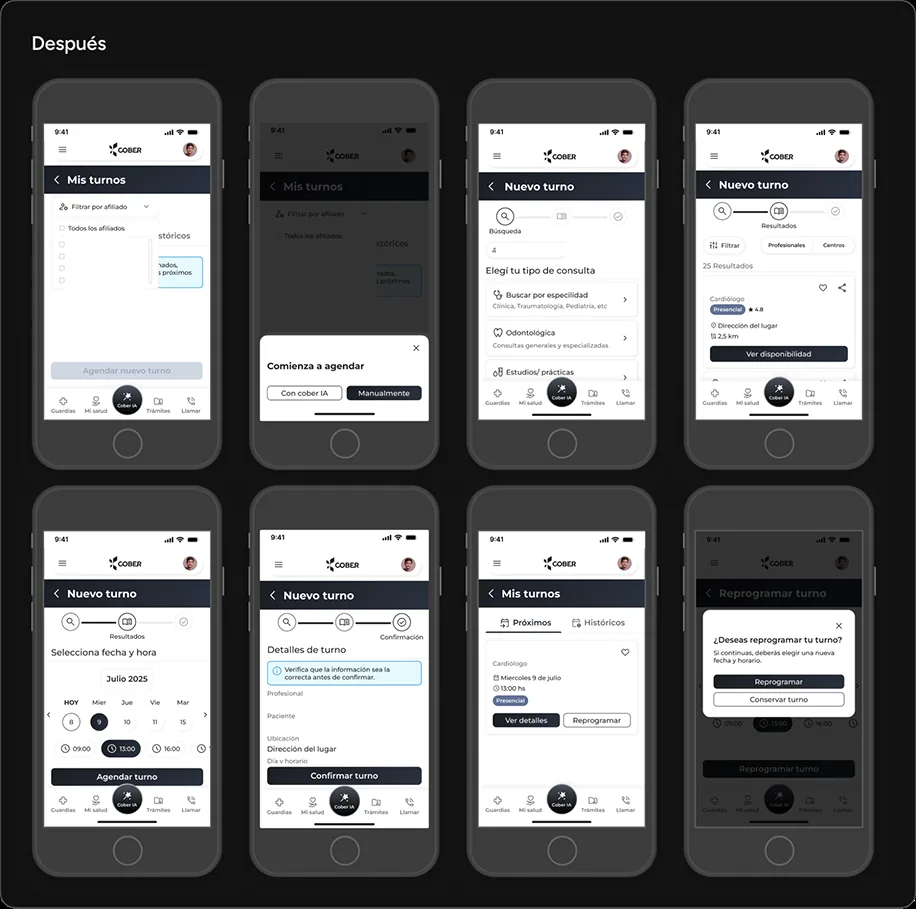
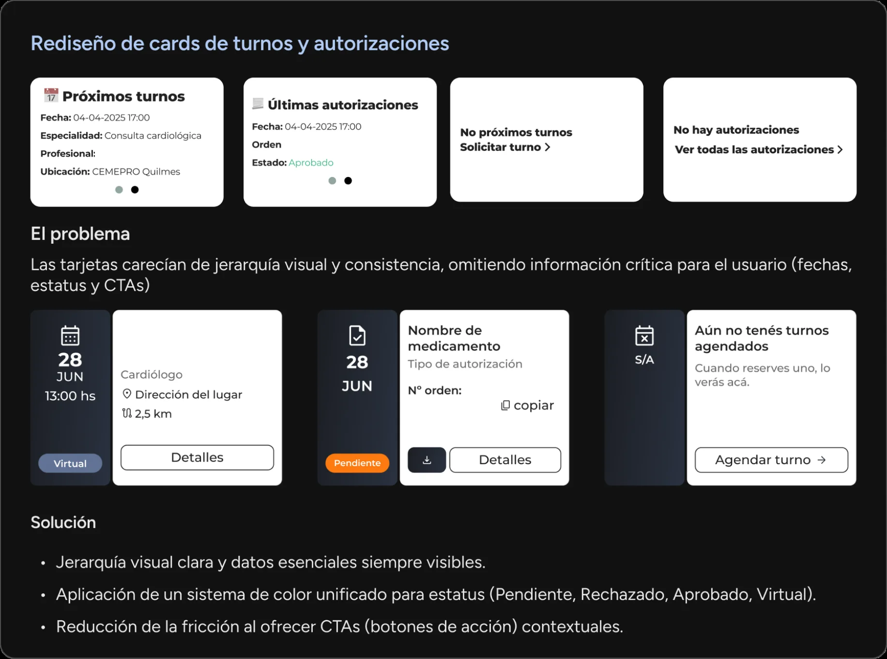
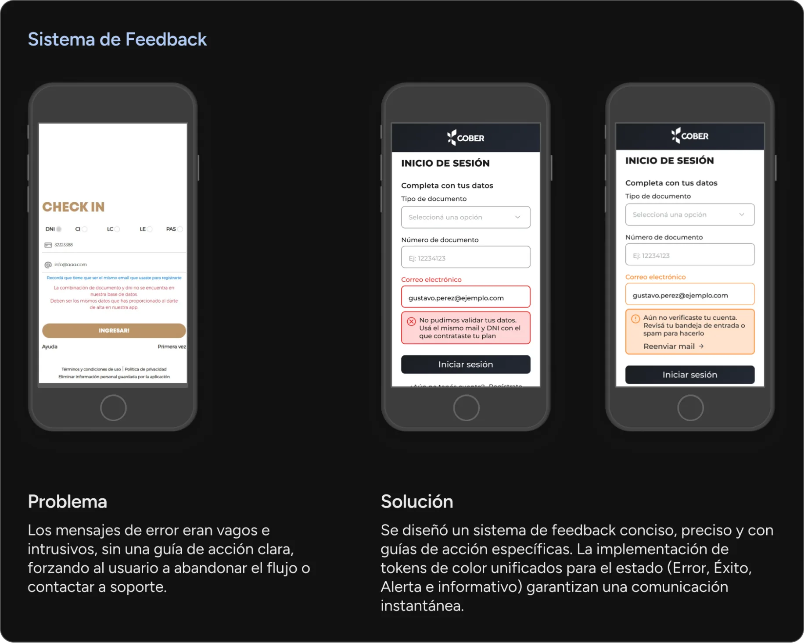
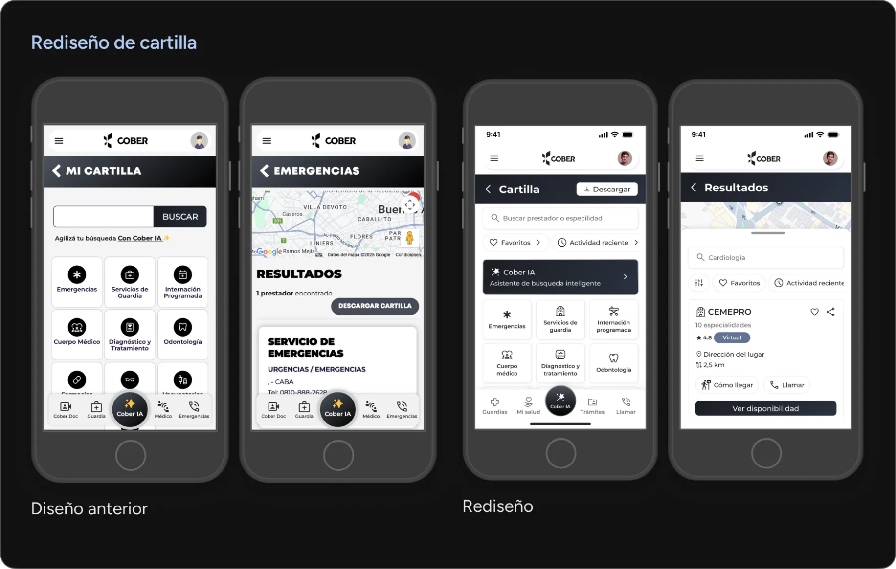

Health App Redesign
La salud digital: del caos a la búsqueda de una experiencia intuitiva.
- Sector
- Salud · Medicina privada
- Timeline
- Abr 2025 – Feb 2026
- Rol
- UX/UI Designer Ssr
- Skills
- UX Research · UI · Prototype · UX Writing

⛔ Problema
La aplicación se encontraba en un estado crítico: inconsistente, poco intuitiva y frustrante para sus usuarios. No solo carecía de coherencia, sino que fallaba en sus flujos más importantes.
Objetivo: convertir la app en una experiencia de usuario confiable y efectiva.
🛠️ Proceso
Diagnostiqué el problema de raíz antes de proponer soluciones. Cada decisión fue tomada a partir de investigación y de insights de encuestas a usuarios.
Comencé con una revisión y navegación por diferentes flujos para definir los puntos de mayor fricción.
Hallazgos clave
-
01
Jerarquía visual inconsistente
Problemas de grid y de alineación a lo largo de toda la app. -
02
Uso inapropiado del color
Con fallas de accesibilidad asociadas. -
03
Flujos con fricción
Búsqueda ineficiente y navegación confusa. -
04
Ausencia de feedback visual
E incumplimiento de patrones ya conocidos por el usuario. -
05
Vocabulario impreciso
Terminología interna que no conectaba con el lenguaje del usuario.

Construyendo una arquitectura de información sólida: Card Sorting
Con un card sorting realizado en 2 fases, validé los modelos mentales de los usuarios y descubrí cómo distinguen claramente entre los distintos tipos de gestiones.
💡 Solución
Con los insights de la investigación, el rediseño se enfocó en la claridad, la coherencia y una estética minimalista, alineada con los patrones de diseño modernos.
Elementos centrales del rediseño
-
01
Nueva arquitectura de información
-
02
Flujos de usuario optimizados
-
03
Credencial digital simplificada
-
04
Prototipos interactivos
Antes y después


Cards de turnos y autorizaciones
Las tarjetas no tenían jerarquía ni consistencia, y omitían información crítica: fechas, estado y acción a seguir. Definí un sistema de color unificado para los estados y dejé los datos esenciales siempre visibles, con la acción principal a mano en cada tarjeta.

Sistema de feedback
Los mensajes de error eran vagos e intrusivos y no decían qué hacer después, así que el usuario abandonaba el flujo o llamaba a soporte. Diseñé un sistema de feedback conciso y con guía de acción explícita, apoyado en tokens de color por estado: error, éxito, alerta e informativo.

Cartilla médica

💥 Impacto
La señal más clara no vino de un dashboard sino del equipo de atención al cliente: después del rediseño dejaron de recibir los reclamos de usabilidad que habían motivado el proyecto. Los problemas por los que la gente escribía ya no estaban ahí.
Es feedback cualitativo, no una métrica de producto — pero viene de quienes atendían esos reclamos todos los días.
💭 Mi aprendizaje
Descubrí que la investigación con usuarios es lo que permite ir más allá de lo estético. Observar en persona cómo la gente organiza información me permitió comprender sus frustraciones y diseñar una estructura que se sintiera natural.